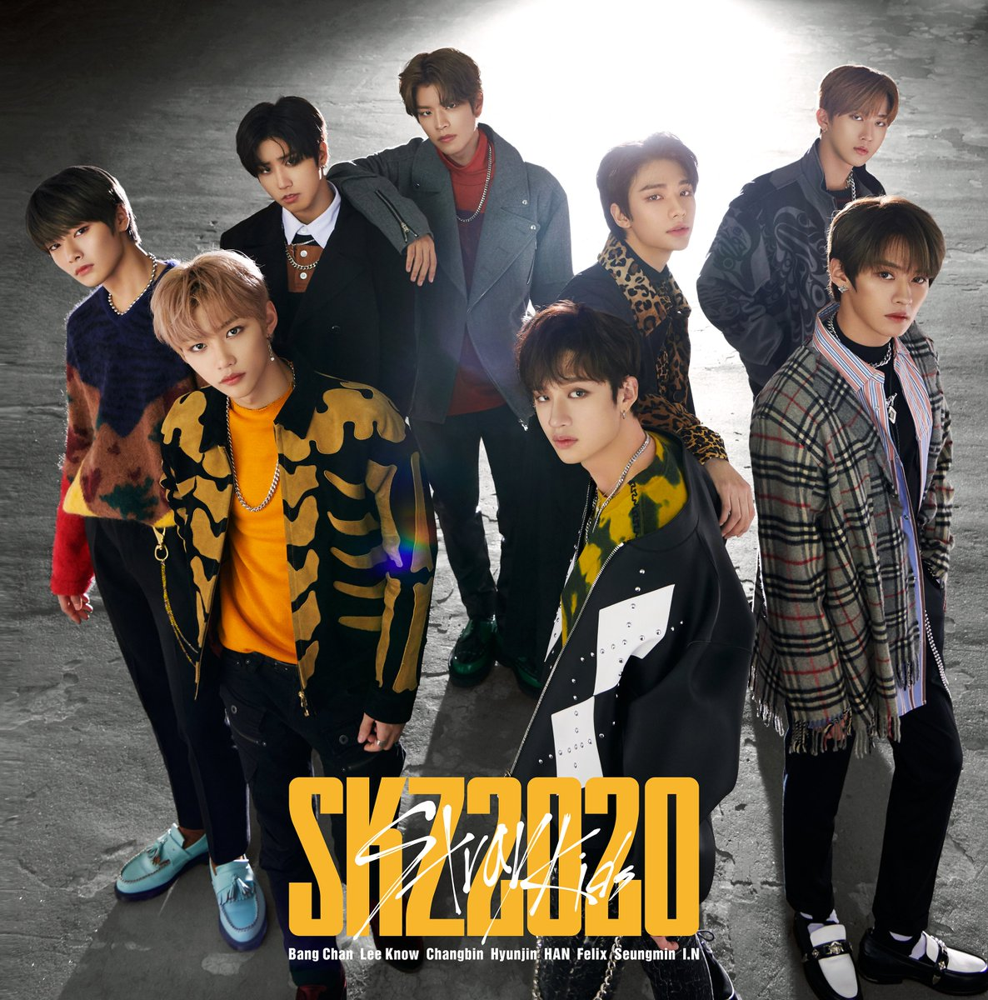

| Stray Kids (en hangul, 스트레이 키즈) es una boyband surcoreana formada por JYP Entertainment a través del reality show del mismo nombre en 2017. Estaba compuesto originalmente por nueve miembros: Woojin, Bang Chan, Lee Know, Changbin, Hyunjin, Han, Felix, Seungmin e I.N.
El 28 de octubre de 2019, JYP Entertainment comunicó que el mayor de los integrantes, Woojin, dejaría el grupo y a su vez la agencia por "motivos personales". El grupo lanzó un EP de predebut el 8 de enero de 2018 e hizo su debut el 25 de marzo de 2018. El 1 de agosto de 2018, nombraron a su fandom oficial como Stay
Stray Kids tiene tres sub-unidades: 3RACHA (Bangchan, Changbin y Han), Dance Racha (Felix, Hyunjin y Lee Know) y Vocal Racha (I.N y Seungmin).
|

|
|